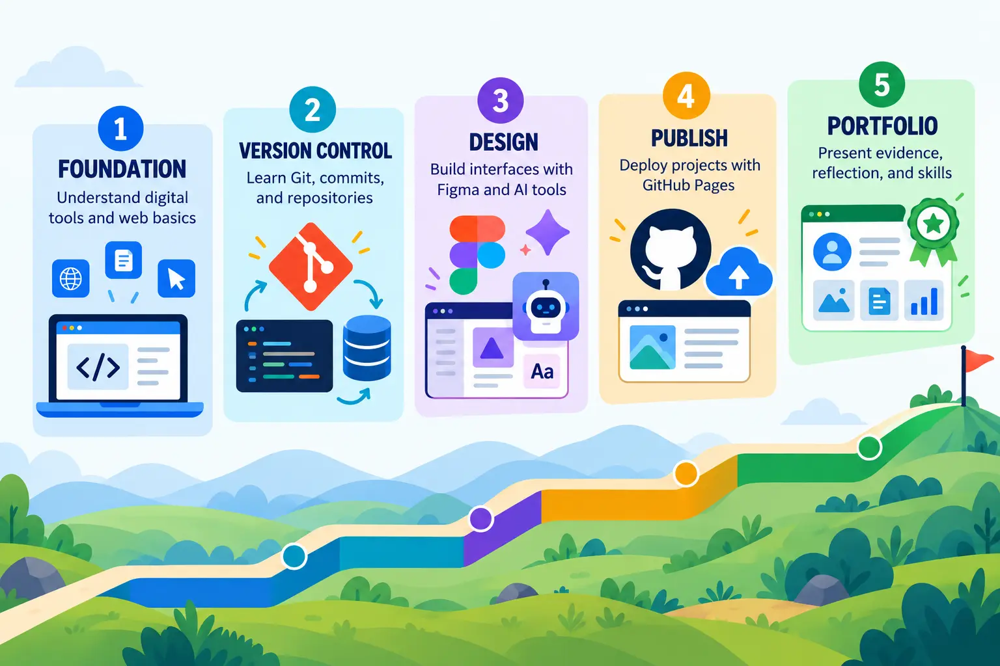

Use roadmaps to make better choices
A roadmap shows possible topics and dependencies. It is not the course syllabus and you do not need to master every item. Use it to identify your next useful step, then prove that learning through a small project.

Learning outcomes
- Distinguish a career roadmap from a course syllabus.
- Identify foundational skills for a beginning data engineer.
- Prioritise learning according to current ability and course needs.
- Document a short, evidence-based personal learning plan.
Recommended roadmap collection
Use the roadmap collection below to choose a focused learning direction. Begin with Git and GitHub, then connect that foundation to Python, SQL, data engineering, backend systems, DevOps and cloud according to your current needs.
| Roadmap | SCST1133 purpose | Suggested priority |
|---|---|---|
| Git and GitHub | Version control, collaboration and portfolio publishing. | Start now |
| Data Engineer | See how databases, pipelines, orchestration, cloud and quality connect. | Course direction |
| Python | Build a programming foundation for data processing and automation. | Foundation |
| SQL | Query, transform and reason about structured data. | Foundation |
| Backend | Understand APIs, servers, databases and application integration. | Explore later |
| DevOps / Cloud | Connect deployment, infrastructure, monitoring and cloud services. | Explore later |
A focused SCST1133 route
| Phase | Focus | Evidence |
|---|---|---|
| 1 · Work visibly | Git, GitHub, Markdown and repository structure | A clear repository with meaningful commits |
| 2 · Handle data | Python, SQL, files, APIs and databases | A small reproducible data task |
| 3 · Build a pipeline | Ingestion, transformation, storage and data quality | A documented end-to-end mini pipeline |
| 4 · Operate responsibly | Cloud, orchestration, testing, monitoring, security and governance | Design decisions, tests and operational notes |
Create your personal roadmap
Assess your starting point
Classify relevant skills as New, Learning or Can demonstrate. Base the rating on evidence, not confidence alone.
Select three priorities
Choose one Git/GitHub skill, one data skill and one supporting skill. Keep the scope achievable within the semester.
Define evidence
For each priority, name a small deliverable such as a repository, SQL query set, Python script or pipeline diagram.
Review regularly
Update the plan after feedback or project milestones. A roadmap should change as your evidence grows.
Roadmap reflection file
Create topic-02/developer-roadmap.md in your repository using this structure:
# My Developer Roadmap
## Current evidence
- Git and GitHub: Learning — link to repository
- Python: New
- SQL: Learning — link to exercise
## Three semester priorities
| Priority | Why it matters | Evidence I will create | Target week |
|---|---|---|---|
| Meaningful Git commits | Reproducible work | Repository history | Topic 4 |
## Next action
One specific task I can complete this topic.Keep it focused: A short roadmap with evidence and deadlines is more useful than a long list of tools copied from the internet.